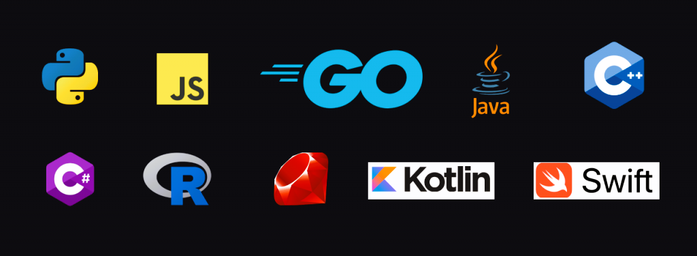

WELCOME TO BYTEWORLD
THIS WEBSITE IS START OUR CARRER AND IMPROVE YOUR PROGRAMMING LANGUAGE SKILL
programs | tutorials | quizs
Certainly! Here are some tips for starting your career in information technology:
1. Build a Strong Foundation: Ensure you have a solid understanding of fundamental concepts and technologies in IT. This includes programming languages, databases, networking, and operating systems.
2. Specialize: Identify an area of IT that interests you the most and consider specializing in it. Whether it's cybersecurity, data science, web development, or another niche, specialization can make you stand out.
3. Hands-On Experience: Gain practical experience through internships, projects, or personal initiatives. This not only enhances your skills but also provides real-world examples to showcase in your portfolio.
4. Networking: Attend industry events, join online forums, and connect with professionals in your chosen field. Networking can open up opportunities for mentorship, job leads, and collaborative projects.
5. Certifications:Depending on your chosen field, consider obtaining relevant certifications. Certifications can validate your skills and make your resume more attractive to employers.
6. Keep Learning: IT is a rapidly evolving field, so staying updated on the latest technologies and trends is crucial. Online courses, webinars, and professional development programs can help you stay ahead.
7. Soft Skills: Develop strong communication and problem-solving skills. IT professionals often work in teams, and effective communication is key. Being able to troubleshoot and find solutions is equally important.
8. Create a Portfolio: Showcase your projects, coding samples, and any other relevant work in a portfolio. This gives employers a tangible example of your skills and accomplishments.
9. Resume Optimization: Tailor your resume for each job application, emphasizing the skills and experiences most relevant to the position. Use action verbs to describe your achievements.
10. Job Search Strategies: Utilize job boards, company websites, and professional networking platforms for job searches. Don't hesitate to reach out to your network for advice and potential job opportunities.
Remember, patience and persistence are crucial. Building a successful career takes time, so stay committed to your goals and continue learning and adapting as the industry evolves. Good luck!
WHICH LANGUAGE IS USED BY MANY PEOPLE?
